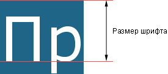

Определяет размер шрифта элемента. Размер может быть установлен несколькими способами. Набор констант (xx-small, x-small, small, medium, large, x-large, xx-large) задает размер, который называется абсолютным. По правде говоря, они не совсем абсолютны, поскольку зависят от настроек браузера и операционной системы.
Другой набор констант (larger, smaller) устанавливает относительные размеры шрифта. Поскольку размер унаследован от родительского элемента, эти относительные размеры применяются к родительскому элементу, чтобы определить размер шрифта текущего элемента.
В конечном итоге, размер шрифта сильно зависит от значения свойства font-size у родителя элемента.
Сам размер шрифта определяется как высота от базовой линии до верхней границы кегельной площадки, как показано на рис. 1.

Рис. 1. Размер шрифта
Для задания абсолютного размера используются следующие значения: xx-small, x-small, small, medium, large, x-large, xx-large. Их соответствие с размером шрифта в HTML приведено в табл. 1.
| CSS | xx-small | x-small | small | medium | large | x-large | xx-large | |
|---|---|---|---|---|---|---|---|---|
| HTML | 1 | 2 | 3 | 4 | 5 | 6 | 7 |
Относительный размер шрифта задается значениями larger и smaller.
Также разрешается использовать любые допустимые единицы CSS: em (высота шрифта элемента), ex (высота символа х), пункты (pt), пикселы (px), проценты (%) и др. За 100% берется размер шрифта родительского элемента. Отрицательные значения не допускаются.